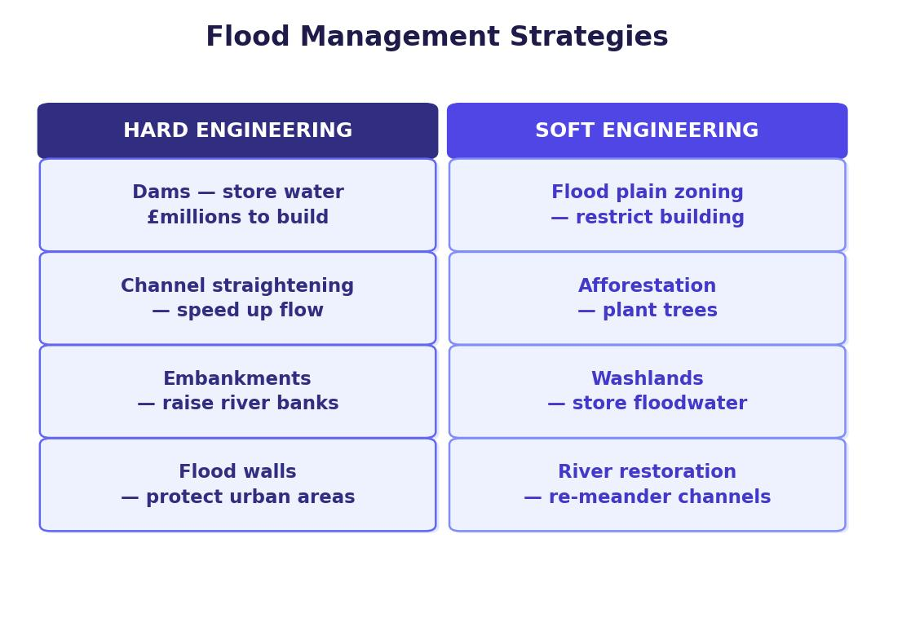

Hard Engineering
Hard engineering involves building or physically altering a river to stop or reduce flooding. These strategies are effective but expensive and can have negative environmental impacts.
A dam is a large concrete barrier built across a river. The valley behind it floods, forming an artificial lake called a reservoir. Water can be released in a controlled way to prevent flooding downstream.
Benefits: reservoirs store excess water and can provide drinking water. They attract visitors who boost the local economy and create new habitats. Costs: dams are very expensive (Cow Green Reservoir on the Tees cost £31 million). Building a dam floods the valley behind it, displacing people from their homes and breaking up communities.
An embankment is an artificially raised river bank. Bulldozers move large mounds of impermeable soil onto the river banks to increase their height, allowing the channel to hold more water.
Benefits: relatively cheap compared to other hard engineering options. Embankments can double as riverside footpaths and attract wildlife. Costs: they require constant monitoring and maintenance due to erosion. If an embankment is breached during a flood, water can become trapped on the land because the raised bank blocks its return route to the river.
Channel straightening involves engineering a meandering section of river to create a widened, straightened and deepened course. This reduces friction between the water and the bed and banks, allowing water to flow through the area more quickly.
Benefits: water moves out of the area rapidly, and straightening helps remove sediment build-up that would otherwise raise the channel bed. Costs: expensive to carry out. Changes to the river’s flow can destroy habitats and increase flooding further downstream, where the faster-moving water arrives.
Flood relief channels are man-made channels that divert water around or away from important locations when the river is at risk of flooding.
Benefits: footpaths and cycle paths can be built alongside the new channel. Insurance costs are lower in the area because the risk of flooding is reduced, and property values can increase. Costs: expensive to build and maintain. Settlements downstream can suffer increased flooding where the diverted water merges back into the main river channel.
Soft Engineering
Soft engineering uses natural processes and planning to reduce flood risk. These strategies are generally cheaper and more environmentally friendly than hard engineering, but they do not always prevent flooding entirely.
Flood plain zoning organises land use so that areas near the river that flood frequently are not built on. These zones are used for low-risk purposes such as pastoral farming or playing fields. Higher ground further from the river is reserved for housing, transport and industry.
Benefits: restricting building on the flood plain prevents new impermeable surfaces from increasing runoff. Traditional water meadows and green spaces are protected. Costs: this strategy has limited effect where cities have already expanded across flood plains. There is a housing shortage in the UK, and restricting building can push up house prices.
The Environment Agency monitors river levels and issues flood warnings through TV, radio, internet, newspapers and smartphone apps. People can prepare by moving valuables upstairs, using sandbags and having an evacuation plan.
Benefits: very cheap compared to building defences. Advance warning gives people time to protect their property and feel more in control. Costs: warnings only work if people listen, have access to the communications and take action. Flood warnings do not prevent the flood itself. Insurance costs can still rise, and houses in flood-risk areas are difficult to sell.
Planting trees increases interception and lag time. Trees catch rainfall on their leaves and branches, slowing its journey to the river. Roots absorb water from the soil, reducing the volume reaching the channel. A fully grown oak tree can absorb up to 100 litres of water per day.
Benefits: reduces surface runoff and increases lag time. Absorbs CO₂, increases biodiversity and creates new habitats. Costs: trees take a long time to grow before they have a significant effect on flood prevention. Planting can change the appearance of the countryside and reduces open grassland available for grazing.
River restoration involves returning a river to its natural state by removing man-made levées, straightened channels or concrete banks. Natural rivers with meanders and wetlands store more water and slow its progress downstream.
Benefits: creates new wetland habitats, increases biodiversity and looks attractive. Increased water storage reduces flood risk downstream. Costs: possible loss of agricultural land near the river. Not always the most effective or practical strategy in heavily developed areas.
Case Study: Flood Management on the River Tees
The River Tees has a long history of flooding, especially in the lower course where densely populated towns like Yarm, Stockton and Middlesbrough are built on the flood plain. Yarm sits on a meander in the river, making it particularly vulnerable. Industrial areas, including the former ICI chemical works, mean flood damage can run into hundreds of thousands of pounds.
The River Tees is described as a flashy river. Cross Fell (893 m) receives over 2,000 mm of rain per year on steep, impermeable slopes. Water reaches the river very quickly, meaning discharge can rise rapidly after rainfall.

Management Strategies Used on the Tees
Cow Green Reservoir
A dam and reservoir in the upper course stores excess water that runs off the impermeable rock. It also provides high-quality drinking water for the region. Cost: £31 million.
Embankments at Yarm
Raised embankments along the river banks at Yarm increase the channel’s capacity. Flood defence scheme cost: £2 million.
River Straightening near Stockton
Sections of the river near Stockton have been straightened to increase the speed of water flow through populated areas.
Tees Barrage
A barrage built across the estuary keeps the river at a consistent high-tide level, preventing the sea from slowing river flow. Cost: £54 million, but this investment attracted £500 million in economic development including new housing, industries and leisure facilities.
Flood Plain Zoning
Industrial land around the estuary has been zoned to prevent future building on flood-prone areas. Disused industrial land is being cleared and replaced with green space.
Tree Planting
6.5 hectares of woodland have been planted near Darlington to increase interception and reduce surface runoff.
Flood Warning System
An Environment Agency warning system at Yarm and along the Tees gives residents advance notice of potential flooding.
Evaluating the River Tees Management
- Social impacts — construction of flood defences took several years and was disruptive to local communities (noise, traffic, restricted access). However, the reduced flood risk makes places like Yarm and Stockton safer, and residents feel more reassured that their homes are protected.
- Economic impacts — the Tees Barrage cost £54 million but attracted £500 million in new investment, including housing, industry, retail and leisure. Reduced flood risk means less damage to property and businesses. However, large-scale projects like dams are very expensive.
- Environmental impacts — the dams and reservoirs at Cow Green caused some loss of natural habitat during construction. However, water quality along the Tees has improved significantly, boosting biodiversity and river habitats. Tree planting near Darlington (6.5 hectares) increases interception and absorbs CO₂.
The River Tees uses both hard and soft engineering. Most strategies are concentrated in the lower course because this is where the largest populations and most valuable property are located. The upper course relies on the Cow Green Reservoir to store excess water before it reaches the populated areas downstream.